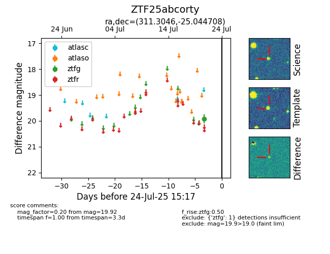

Target ZTF25abcorty at 2025-07-24 15:17, see:
FINK: fink-portal.org/ZTF25abcorty
Lasair: lasair-ztf.lsst.ac.uk/objects/ZTF25abcorty
ALeRCE: alerce.online/object/ZTF25abcorty
alt names
ZTF25abcorty (ztf,fink)
coordinates:
equatorial (ra, dec) = (311.3046,-25.04471)
galactic (l, b) = (20.2004,-35.24600)
photometry
last ztfg=19.92
1 ztfg detections
